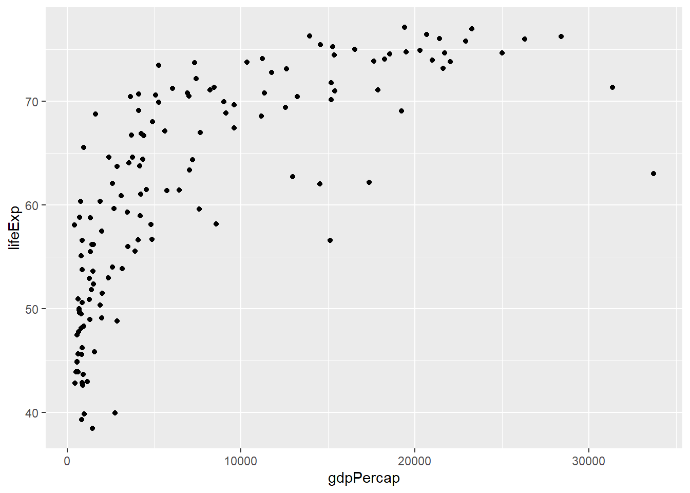
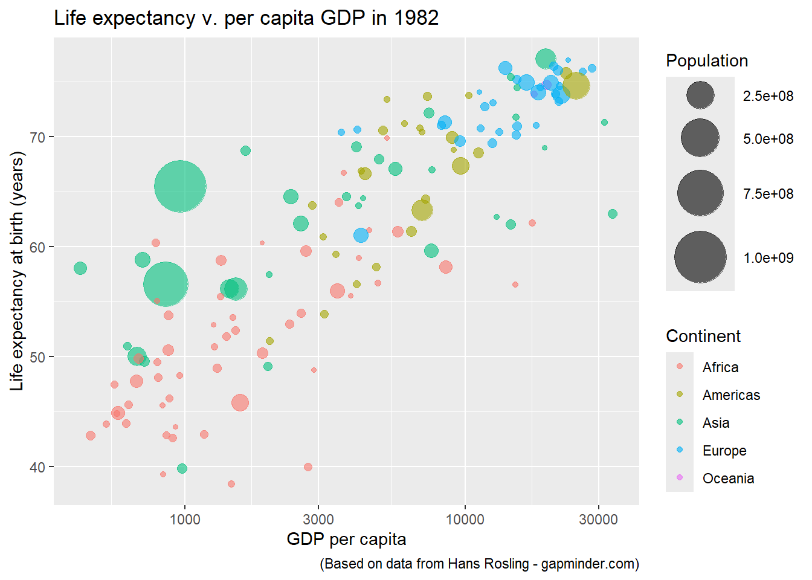
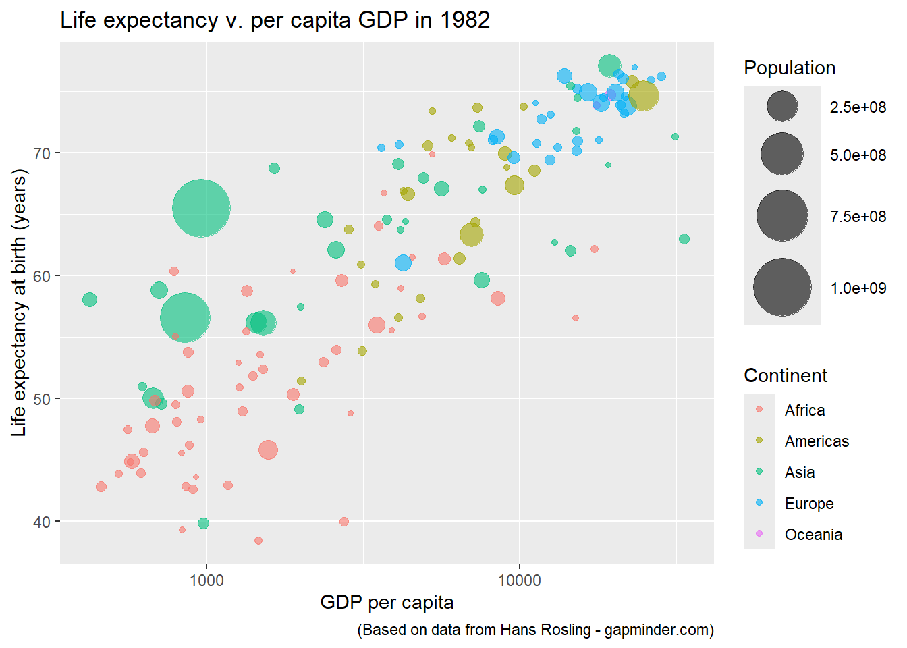
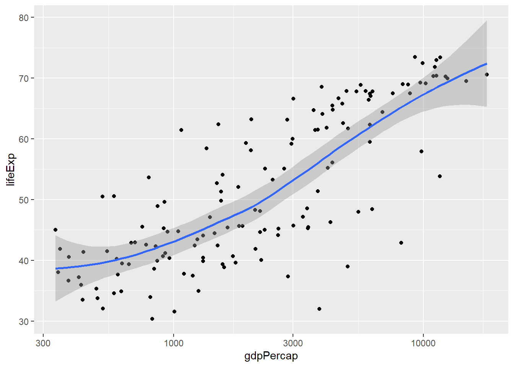

What visual variables does Rosling use to visualize each variable in the data?
x coord = gdp per capita
y coord = life expectancy
size of markers = population
color of markers = continent
movement of markers = change in gdp/life expectancy over time
1. Import Data
Now let’s import this dataset:
df <-read.csv("../data/gapminder.csv")head(df)
country continent year lifeExp pop gdpPercap
1 Afghanistan Asia 1952 28.801 8425333 779.4453
2 Afghanistan Asia 1957 30.332 9240934 820.8530
3 Afghanistan Asia 1962 31.997 10267083 853.1007
4 Afghanistan Asia 1967 34.020 11537966 836.1971
5 Afghanistan Asia 1972 36.088 13079460 739.9811
6 Afghanistan Asia 1977 38.438 14880372 786.1134
2. First Plot: 1 year, two variables
Let’s first create a scatterplot of this dataset for one year (1982) and two variables (lifeExp = life expectancy and gdpPercap = gdpPercap).
# let's store the year we want to examine in variable# so we can easily change it lateryr =1982tempdf <- df |>filter(year == yr)ggplot(tempdf, aes(x=gdpPercap, y=lifeExp)) +geom_point()

2.2 Adjust scale
Copy and paste the code above into the cell below. For the rest of this lesson, you will be copying and pasting existing code into new code cells before adding one additional line of code at a time. Adding code one line at a time will help you see what each line accomplishes. If you ever get stuck, please review the notebook that starts with “complete_”.
In the code cell below, besides adding the option() function inputed for you, paste the code from the previous cell and then add the following code to it:
# use scale_x_continuous to transform the scale of the
# x axis to a logarithmic scale
... +
scale_x_continuous(trans="log10")
# to create larger plots (jnbs!)options(repr.plot.width=10, repr.plot.height=8)# Paste code from previous cell below# use scale_x_continuous to transform the scale of the # x axis to a logarithmic scaleggplot(tempdf, aes(x=gdpPercap, y=lifeExp)) +geom_point()+scale_x_continuous(trans="log10")
Note: we can see a clearer relationship between the per capita GDP of countries and the life expectancy of their people now that we represent GDP on a logarithmic scale.
3. Plot other years
If we want to quickly change a value in our plot code, it might make sense to assign it to a variable. Copy and paste the ggplot code above, but this time also pasting and modifying the code that set the year filter, i.e.:
yr = [choose new year]
tempdf <- df |>
filter(year == yr)
this time plugging in different years (gapminder dataset covers 1952 to 2007 at five-year intervals, so: 1952, 1957, 1962….).
Note: we use aes() to match visual variables (i.e. color) with data variables (i.e. continent). If you want to set the color as a constant, you would do so outside aes() and using the name of hex# of a color, such as:
Try setting color=continent for aes() and color="blue" in geom_point(). This is bad practice to set the color as both a constant and a variable, but let’s see which one ggplot uses (or does it return an error?).
The size value is probably self-explanatory. alpha sets the opacity of the points, with 1.0 signifying completely opaque shapes and 0 completely transparent.
Experiment with different sizes and alpha values.
3.4 Size as visual variable
However, we can also use size to represent a variable rather than a constant. Let’s use it to represent population. Add in an argument to your code that uses the population data variable to determine the size of each point (*be sure to remove the size=[constant] argument first!*):
All these points seem a little small, especially those for the largest countries. We can set minimum and maximum values for the size of these points using
*There are, of course, more sophisticated ways to “bin” or “scale” data that is represented by the size parameter. You can do more digging into this on your own. The focus here is on how to customize these arguments rather than best practices for doing so.*
4. Plot Customization
4.1 Themes
Perhaps the simplest way to customize your plots is to choose a pre-existing theme. Let’s do so, but with a little wrinkle.
Like almost anything with R we can store our ggplot code in memory. For example, try the following:
p <- {copy and paste your previous ggplot code here}
Then, in the same or new code cell, add the following code to choose a different theme:
p + theme_minimal() + ggtitle("theme_minimal()")
p + theme_grey() + ggtitle ("theme_grey()")
p + theme_bw() + ggtitle("theme_bw()")
For more themes see the complete list of ggplot’s stock themes. None are particularly creative or striking, but at least they allow some customization. For more on customizing these existing themes see the themes section of the ggplot2 book. Also, check out Appendix 2 in this notebook, where I demonstrate how to create your own theme.
4.2 Titles & Labels
Take your existing code, but now add a title. We can do so using the variable p rather than copying and pasting in previous code.
However, if you want to be able to quickly reuse this code for other years, it may be useful to call the current value of the variable yr rather than inputting the year directly. For that we can use the sprintf() function as follows:
p <- p +
ggtitle(sprintf("Life expectancy v. per capita GDP in %d", yr))
# to output results call p:
p
For sprintf strings, %d serves as a stand-in for numerical variables and %s represents character variables.
p <- p +ggtitle(sprintf("Life expectancy v. per capita GDP in %d", yr)) p
We can see the value of using the yr variable with the title when we change the value of that variable.
yr =2002tempdf <- df |>filter(year == yr)p2 <-ggplot(tempdf, aes(x= gdpPercap, y=lifeExp, color=continent, size=pop)) +geom_point(alpha=0.6) +scale_x_continuous(trans="log10") +scale_size_continuous(range =c(1, 15)) +ggtitle(sprintf("Life expectancy v. per capita GDP in %d", yr)) # we need to set yr back to 1982 as that is the variable stored with plot `p`yr =1982p2
Adding other Labels
You can add x-axis, y-axis labels, captions, and legend lables using ggplot’s lab() function. Try the following, but replacing the information between {} with the appropriate labels:
p <- p + labs(x="{x axis label}", y = "{x axis label}",
caption = "{caption - additional detail about plot}",
color = '{label for data used for color variable}',
size = "{label for data used for size variable}")
p <- p +labs(x="GDP per capita", y ="Life expectancy at birth (years)", caption ="(Based on data from Hans Rosling - gapminder.com)", color ='Continent',size ="Population") p

4.3 Ticks
We can also customize the location of our axes ticks by adding the argument
breaks = c(100, 1000, 10000, 100000)
to scale_x_continuous:
p <- p +scale_x_continuous(breaks =c(100, 1000, 10000, 100000), trans="log10")
Scale for x is already present.
Adding another scale for x, which will replace the existing scale.
p

4.4 Alternative Color Palettes
There are many different color palettes and scales that can be used to customize ggplot graphics. Some of the most popular are provided by the viridis package, which are designed to be easier to read for people with colorblindness.
#install.packages("viridis")library(viridis)
Warning: package 'viridis' was built under R version 4.4.3
Loading required package: viridisLite
Warning: package 'viridisLite' was built under R version 4.4.3
p <- p +scale_color_viridis(discrete=TRUE, option="turbo") +theme_minimal()p
4.5 Saving plot: also smooth bumpy edges with vector format (.svg) and set plot size
When not representing time on one of the axes (as in time-series line plots), there are two other common solutions to represent change over time:
represent different time periods with small multiples (known as facets) - good for printed graphics
represent the passage of time with animated plots - good for graphics published online.
To represent time, however, we need to re-compile our ggplot code to include the full dataset (df), which includes different years:
p_all <-ggplot(df, aes(x= gdpPercap, y=lifeExp, color=continent, size=pop)) +geom_point(alpha=0.6) +scale_x_continuous(trans="log10") +scale_size_continuous(range =c(1, 15)) +labs(x="GDP per capita", y ="Life expectancy at birth (years)", caption ="(Based on data from Hans Rosling - gapminder.com)", color ='Continent',size ="Population") +scale_color_viridis(discrete=TRUE, option="turbo") +theme_minimal()
5. Small Multiples (facets)
To create small multiples below, we will use the facet_wrap() function. Howe
# the plot below may be a little too small to represent these small multiples# but, we can save it at a larger size:ggsave(file="../images/gapminder_facets.svg", width=10, height=12)
Interactive Visualizations using plotly
ggplot is great for creating complex static visualizations. To create interactive and animated visualizations, however, many R users use the plotly package.
Rendering the gapminder dataset as an interactive and animated plot will allow us to visualize change over time.
Normally, to create interactive visualizations with plotly we would need to translate our code into plotly syntax. Fortunately, however, we can also use the ggplotly packageto automatically render ggplot code with plotly. Since we have been using ggplot thusfar, let’s use the latter option.
We need to copy and paste the full code once again, however, as we need to add specify the frame argument in the aes(). The argument frame sets the variable we will use for each step of the animation, which should be our time variable year:
aes(..., frame=year)
Note: For those seeking to create interactive, animated plotly visualizations at scale or hosted online, creating plotly graphs using native plotly syntax is much faster.
library(plotly)
Warning: package 'plotly' was built under R version 4.4.3
Attaching package: 'plotly'
The following object is masked from 'package:ggplot2':
last_plot
The following object is masked from 'package:stats':
filter
The following object is masked from 'package:graphics':
layout
p_all2 <-ggplot(df, aes(x= gdpPercap, y=lifeExp, color=continent, size=pop, frame=year)) +geom_point(alpha=0.6) +scale_x_continuous(trans="log10") +scale_size_continuous(range =c(1, 15)) +labs(x="GDP per capita", y ="Life expectancy at birth (years)", caption ="(Based on data from Hans Rosling - gapminder.com)", color ='Continent',size ="Population") +scale_color_viridis(discrete=TRUE, option="turbo") +theme_minimal()ggplotly(p_all2)
We can customize the speed of the playback using animation_opts() and its parameter frame:
ggplotly(p_all2) |>animation_opts(frame=1000)
Appendix 1: Identifying & Labeling Outliers
One of many benefits of visualizing our data is the identification of unexpected outliers. The code below creates a scatter plot, but this time for the year 1957. What outlier(s) do you notice here?
Notice, there appears to be an outlier in this dataset: one country with a 1957 per capita GDP greater than $100,000. Let’s find out what country this is using filter():
tempdf |>filter(gdpPercap >100000)
country continent year lifeExp pop gdpPercap
1 Kuwait Asia 1957 58.033 212846 113523.1
Now that we know what country that is, we can filter the full dataset (for 1952 - 2007) to see if its 1957 per capita GDP is in line with other years.
tempdf |>filter(country =="Kuwait")
country continent year lifeExp pop gdpPercap
1 Kuwait Asia 1957 58.033 212846 113523.1
If you do some research on Kuwait’s history, it does appear there is a rational explanation for this: the explosion of oil revenues the country experienced after World War II.
However, let’s suppose we suspected Kuwait’s status as an outlier was due to a possible data error. In that case, we may choose to remove Kuwait from our dataset, which we can do:
Let’s add one more feature: a smoothed trend line.
The geom_smooth() function in ggplot allows us to overlay a trend line on a scatterplot. By defaults, the line added is a LOESS smooth line. Other options are include linear models (“lm”), generalized linear models (“glm”), or generalized additive models (“gam”). Set these alternative models by using the argument: method = 'lm'.
ggplot(tempdf, aes(x=gdpPercap, y=lifeExp)) +geom_point() +geom_smooth() +#se=FALSE, conf interval 0.95 by default, can change using level= scale_x_continuous(trans="log10")
`geom_smooth()` using method = 'loess' and formula = 'y ~ x'

Quick experiment: what happens when you re-run the code above, but place geom_smooth()+ above geom_point()?
p <-ggplot(tempdf, aes(x=gdpPercap, y=lifeExp)) +geom_point() +geom_smooth() +scale_x_continuous(trans="log10") p +geom_text(data =filter(tempdf, country =="United States"),aes(label = country),vjust =-1,color ="purple",size =5 )
`geom_smooth()` using method = 'loess' and formula = 'y ~ x'
p <-ggplot(tempdf, aes(x=gdpPercap, y=lifeExp)) +geom_point(aes(color = country =="United States")) +geom_smooth() +scale_x_continuous(trans="log10") p +scale_color_manual(values =c("FALSE"="gray", "TRUE"="purple")) +geom_text(data =filter(tempdf, country =="United States"),aes(label = country),vjust =-1,color ="purple",size =5)
`geom_smooth()` using method = 'loess' and formula = 'y ~ x'
$serif
[1] "TT Times New Roman"
$sans
[1] "TT Arial"
$mono
[1] "TT Courier New"
#install.packages("showtext")library(showtext)
Warning: package 'showtext' was built under R version 4.4.3
Loading required package: sysfonts
Warning: package 'sysfonts' was built under R version 4.4.3
Loading required package: showtextdb
Warning: package 'showtextdb' was built under R version 4.4.3
font_add_google(name ="pacifico", #fonts on the Google Fonts sitefamily ="pacifico")# Load the fonts for all graphic devicesshowtext_auto()
boxplot(trees$Volume,main ="", xlab ="", ylab ="",ylim =c(10, 50),col =3)# Add the title, Y-axis label, and text with the custom fonttitle("Volume of Trees", family ="pacifico", cex.main =2, col.main ="blue") title(ylab ="Volume (cu.ft)", family ="pacifico", cex.lab =1.2, col.lab ="pink") text(x =3, y =85, "Outlier", family ="pacifico", cex =1.2, col ="red")
Go to Google Fonts and find one font family you like. Copy and paste the code from the above two code cells below, this time replacing it with the name of the font of your choice.
library(showtext)fontname ="Montserrat"fontfamily ="montserrat"font_add_google(name = fontname, #fonts on the Google Fonts sitefamily = fontfamily)# Load the fonts for all graphic devicesshowtext_auto()boxplot(trees$Volume,main ="", xlab ="", ylab ="",ylim =c(10, 50),col =3)# Add the title, Y-axis label, and text with the custom fonttitle("Volume of Trees", family = fontfamily, cex.main =2, col.main ="blue") title(ylab ="Volume (cu.ft)", family = fontfamily, cex.lab =1.2, col.lab ="pink") text(x =3, y =85, "Outlier", family = fontfamily, cex =1.2, col ="red")